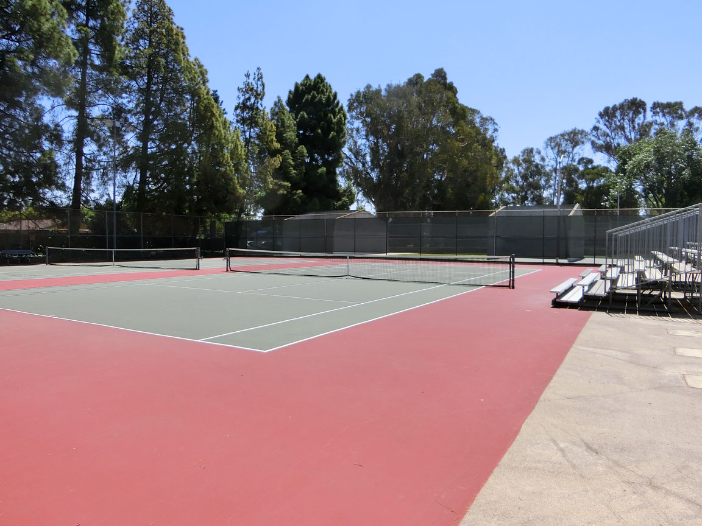

Now that my daughter and I had equipment, we needed just a couple more things. Courts and Time.
We live within walking distance of Mitchell Park in Palo Alto. Mitchell has amazing tennis courts! They clean themselves every day magically. They are right next to backboards so people can warm up and then join games. There are a fair number of them (seven) and within an easy walk there are six more. And the tennis players at Mitchell are amongst the friendliest you will ever encounter. I am happy to now be counted among this elite community and to be expanding its reach every week.
Yes, I have played on better surfaced courts than Mitchell. Lots of clays are nicer than Mitchell’s surface. And Wimbledon grass might be quite a bit better. But the self-cleaning and community part is amazing: I have never encountered anything like it anywhere else. And these courts are public and free.

So shortly after my daughter and I bought equipment at http://tennistownandcountry.com , we ventured over to the courts at Mitchell. My memory is feeble, so I can’t say what time of the day it actually was, but let me guess it was maybe 9AM or 10AM.
With seven courts available, finding court time is not particularly difficult. So after 30 years of hiatus, I was back on the court: teaching my daughter some basics of tennis, and reminding my body of the moves it needed to do. That body was now 48 when last it really played tennis, it was 18.
This first day I had no actual problems for me and my body, but if you know me from my book (http://slumsofpaloalto.com/) this was shortly after my tenth startup. Startups take 60 to 80 hours a week from you every week. Or at least that is what they took from me: I was very good, but I had to get a lot done to hope to see any real payoff. And with a decade of one-after-the-other startups, I was now fat. Like 200 pounds kind of fat. With no significant amount of muscle to explain that kind of weight.
So although the first day of playing tennis went fine and my daughter and I had a lot of fun, I was well aware this could go awry very quickly. Kids can quickly become seriously good at things they focus on. And kids have unlimited energy at their disposal. So if my daughter became even mildly serious about tennis, having 30+ pounds of fat was going to prevent me from keeping up with her.
So a day of play became a start of an incredible journey. Day by day I “simply played”, but each of those days of play transformed me.